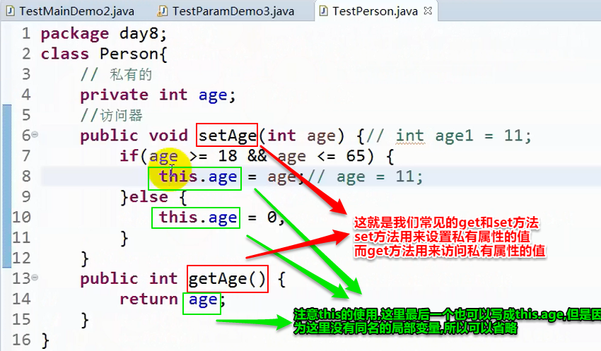

封装：
隐藏了对象的属性和实现细节，对外提供公共的访问方式。
private 属性
public 访问器 getter ,setter (也就是set和get方法) (访问器也就是访问方法)
将类中的成员变量设置为private，禁止随便访问，然后通过提供public的访问器对成员变量进行操作。
同时给一个变量定义get和set方法说明给用户提供的权限是既可以读又可以写,
如果只提供set表示只可以写不可以读, 如果只提供get表示只可以读不可以写
好处：
1.安全；
2.只能通过我提供的方式来访问；
3.访问器中可以使用流程控制语句。
封装举例:


-------------------------------------------------------------------------------------------------------------------------------------------------------------------------
this
this就代表当前类的当前这个对象,就是当前对象的一个引用(即this就表示一个对象,所以"this.成员"相当于"该类的对象.成员")，用来调用本类成员
当前类意味这,即使该类是内部类,作为外部类的一个成员时,在该内部类中直接使用this(不是用类名.this)时,this也是代表该内部类的一个对象,而不是外部类的对象。这就是真正的当前类的含义。
this的作用:
1.成员变量 和 局部变量同名时用this来区分；
2.用 this(参数); 调用构造器来搭建其他构造器(注意,调用构造器只能放在其他构造器中,不能放在普通方法中)，并且位置一定要位于构造方法的第一行代码处。

因为this就相当于"当前对象",所以可以将this像如下使用:
return this;就相当于返回当前对象,哪个对象调的setName()方法就返回谁。


将所有的set访问器都改成这种形式后:

就可以直接在new一个新对象时,不知道构造方法有哪些参数(参数比较多)的时候,直接通过下面这种方式创建对象并赋上想要的值
因为每个set方法返回的都是对象,所以可以一直通过"."的方式来一次调用这么多set方法

记住,不能直接用this.xx来调构造函数,构造函数是不能当成方法在其他函数中随便调用的,因为构造函数只能编译器自己调用,并且只在初始化时使用一次
下面两种用法都会报错


在main方法中,不能直接用this调用同一个类中的其他方法, 是因为main函数是static方法,而this是不能用于static方法中的, 而在同一个类的其他非static方法中可以用this调用其他方法,并且this可以省略,因为不会重名(在非static方法中,连其他的static方法也可以用this调用(this也可以省略),可以运行,只是会报警告)

如果是static方法 ,则可以直接在main方法里直接调用,不需要先初始化自身这个类,再用 .show1();来调用(当然先初始化再调用这样做也可以,不会报错,只是会警告而已)（其实也就是static方法里只能直接调用static方法，静态方法要调用普通方法只能通过创建对象来调用）

------------------------------------------------------------------------------------------------------------------------------------------------------------------------
方法重载：
定义：通常同一个类中，方法名相同，参数列表不同(个数不同，类型不同，顺序不同)的方法之间构成重载。
（与返回值无关,有无返回值不作为重载的依据）
作用：方便记忆。
定义多个相同的方法名实现重载是没有任何关于声明重载的关键字的, 而是当方法名相同时, 编译器会根据参数列表来区分具体调用哪个方法,因为每个重载方法的参数列表必然是不同的
举例:


有无返回值不作为重载的依据 举例:

这样是会报错的,虽然一个有返回值一个无返回值,但是编译器不能对这两个方法进行区分,会认为是同一个方法,因为编译器可以不对返回值进行处理(也就是说 第一个方法的返回值就算代码中没有拿一个变量来接收它或者直接输出,编译也可以通过)。典型的返回值未处理如下,返回值并没有起到任何作用, 就这样消失了。

可变参数(变长参数)和数组不能出现在同一类重载方法里,因为可变参数底层是数组

下面这个
因为可变参数是jdk5.0才出现的东西, 所以肯定要兼容以前的, 所以当可变参数重载和固定参数列表的重载在一起时,
优先使用的是固定参数的重载,也就是说下面这段代码的输出结果是int 而不是int...

重载时也要注意传null作为参数不能引起歧义
下面代码中,t.f()直接传s也行,直接传r也行,但不能直接传null,因为null也是字面值,但null是没有默认类型的,
所以编译器也不知道该调用哪个函数,所以会报错

------------------------------------------------------------------------------------------------------------------------------------------------------------------------
构造方法：
作用：初始化对象
分类：
1.默认
2.无参
3.带参
其实new一个对象, new后面跟的也是一个方法(因为它带了一对括号,词语带一对括号的都是方法), 只不过这个方法和其他方法不同, 是这个类的构造方法, 所以new一个对象这个语法,其实就是调用构造方法初始化(即使自己没有定义构造方法系统也会有默认的一个无参构造方法),所以说new关键字就是用来初始化的(注意和定义区分)。
区分构造方法的办法很简单,构造方法首字母一般大写(因为类就是首字母大写,而构造方法一般和类名相同),而其他方法一般都是小写

创建构造方法的语法：
访问修饰符 构造方法名(参数){
初始化的代码；
}
默认：
当我们没有显式定义一个构造器，那么系统会自动创建一个默认构造，没有参数，访问权限与类相同。
只要我们显式的定义了一个构造器, 默认的构造方法就不存在了
无参构造器、带参构造器：
只要我们显式的定义了构造器，那么默认构造就不存在了。所以为了便于使用,在构造方法重载时,一般都会默认定义一个无参构造,
否则如果只是想创建一个对象, 构造方法不传参，这样的话会报错。
像下图这样不写啥,留个空也行。

构造方法重载。


也可以用this来实现重载,可以少写一点代码


也可以用参数少的调用参数多的构造方法, 但是没有涉及到的参数只能直接给常数作为默认值,所以一般也不会这么做

也可以在声明(也就是我常说的定义)的同时初始化,但是这个值很可能被后来的赋的值覆盖掉

使用构造块来初始化成员变量。
构造块会在创建对象时执行, 创建对象时会先执行构造块,再执行构造函数,。
也就说不管构造块定义在类里的哪个位置,都是先调构造块,再调用构造函数。
所以说它就等同于上面那个声明处初始化,所以感觉也作用不大。

成员变量初试化的全过程

过程分析如下图
其实声明处初始化在构造块初始化前面先初始化也可以理解,毕竟从声明变量到初始化 一条语句就
完成了声明处初始化全过程, 当然是它最先初始化咯
写代码的时候需要了解到,最后决定初始化最终结果的是构造器

但是构造块初始化一定是在构造器初始化前面的,这不论代码的位置如何摆放, 就算如下图所示,初始化的顺序和结果还是一样的


最后说一句,构造块是用来初始化的,最好别放其他代码
在实际运行时,编译器会把所有声明处初始化和构造块初始化的代码按顺序放在每个构造方法里的最前面代码处, 好让
这些代码先执行。所以说，如果能直接用构造器初始化就用,优先使用构造器初始化,省得麻烦。
但如果每个构造器里有冗余的代码 还是可以把冗余的代码单独拿出来放在一个构造块里面,避免代码冗余(这才是构造块的真正用法)
如下图

------------------------------------------------------------------------------------------------------------------------------------------------------------------------
构造方法和普通方法的区别：
1.构造方法的作用是初始化对象。
普通方法则是为了完成特定功能的。
2.构造方法只有创建对象时才能调用，也就是new的时候。
普通方法创建对象后，随时调用。
--------------------------------------------------------------------------------------------------------------------------------------------------------------------------
构造方法(构造器)和访问器(get、set)区别：
1.构造器是在创建对象时赋值；
访问器是在对象创建后，调用赋值；
2.构造器在创建对象时可以一次性初始化；
访问器是在对象创建后，逐个访问赋值；
3.对象创建后修改属性的值，用set访问器。
对象创建后访问属性的值，用get访问器。
这时候构造器就没用了
---------------------------------------------------------------------------------------------------------------------------------------------------------------------------
构造块：
定义：
class 类{
{
//构造块：作用在构造方法重载的时候，解决多个构造器代码冗余的问题。
}
}
———————————————————————手写与上传资料分割线——————————————————————